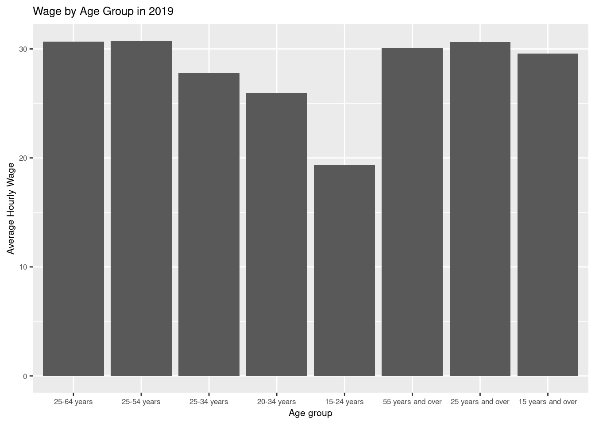
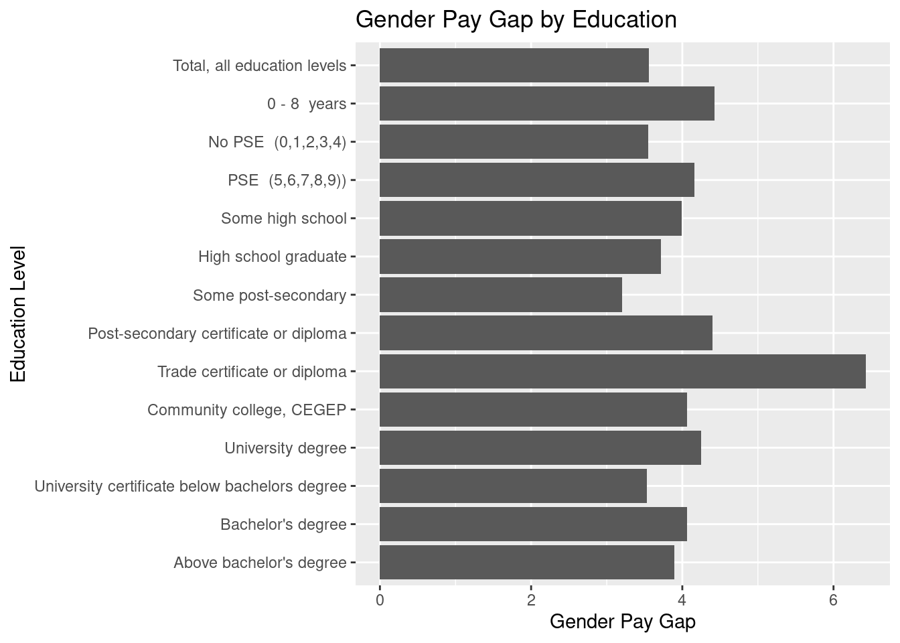
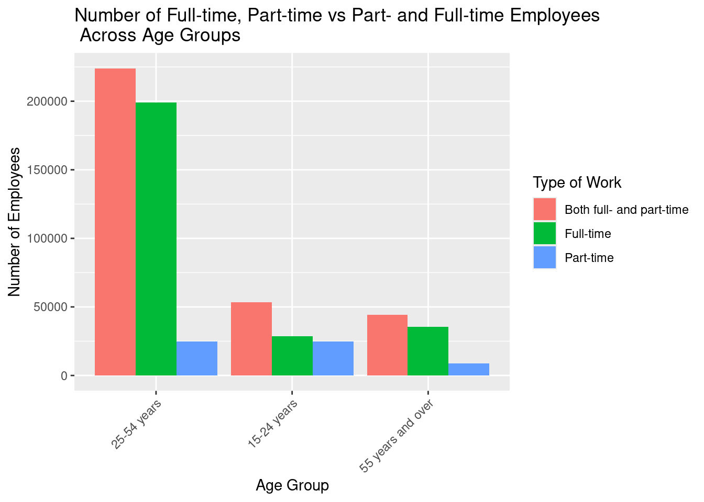
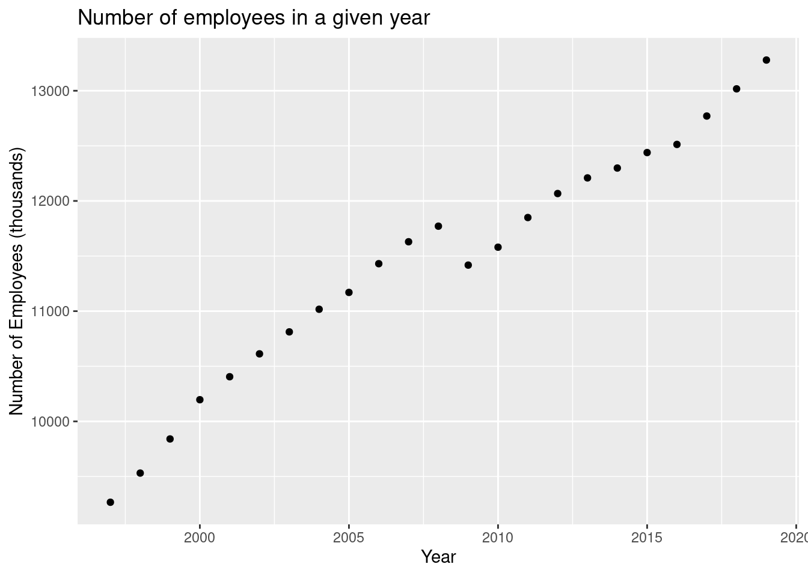

wages =read.csv("wages.csv") %>%mutate_if(is.character, str_trim)wages$Education.level =factor(wages$Education.level,levels =c("Above bachelor's degree","Bachelor's degree","University certificate below bachelors degree","University degree","Community college, CEGEP","Trade certificate or diploma","Post-secondary certificate or diploma","Some post-secondary","High school graduate","Some high school","PSE (5,6,7,8,9))","No PSE (0,1,2,3,4)","0 - 8 years","Total, all education levels"),ordered =TRUE)wages$Age.group =factor(wages$Age.group,levels =c("25-64 years","25-54 years","25-34 years","20-34 years","15-24 years","55 years and over","25 years and over","15 years and over"),ordered =TRUE)# Fuelfuel =read.csv("fuel.csv") %>%mutate_if(is.character, str_trim)fuel <- fuel %>%rename(Toronto.West = Toronto.West.Ouest,Toronto.East = Toronto.East.Est,St.Catharine = St..Catharine.s,Ontario.Average = Ontario.Average.Moyenne.provinciale,Southern.Average.Ontario = Southern.Average.Moyenne.du.sud.de.l.Ontario,Northern.Average.Ontario = Northern.Average.Moyenne.du.nord.de.l.Ontario ) %>%select(!(Type.de.carburant))
1 Description of the Data Set
1.1 Wages by education level
The wages data set includes the average weekly wages rates by education level and immigration status for Canada and Ontario in the years from 1997 to 2019. It includes the following columns:
YEAR: Indicates the year in which the data was collected.
Geography: Indicates the region from which the data was collected. Its possible values include Canada as well as the Canadian provinces and territories.
Type.of.work: Indicates whether the data in the row is for full-time employees or part-time employees or both.
Wages:
Total employees: The number of employees in the given age range, education level, and job status.
Average hourly wage rate: The average hourly wage of the employees in the given age range, education level, and job status.
And so on for Average weekly wage rate, Median hourly wage rate, and Median weekly wage rate.
Education.level: Indicates the level of education. It can include the following:
Date: Indicates the date on which the data was collected.
Fuel Price: Represents the price of fuel.
Ottawa, Toronto.West, Toronto.East, Windsor, London, Peterborough, St.Catharine, Sudbury, Sault.Saint.Marie, Thunder.Bay, North.Bay, Timmins, Kenora, Parry.Sound: Represents the fuel price in various locations in Ontario, Canada.
Ontario.Average: Indicates the average fuel price across different regions of Ontario.
Southern.Average.Ontario: Indicates the average fuel price across the southern regions of Ontario.
Northern.Average.Ontario: Indicates the average fuel price across the northern regions of Ontario.
Fuel.Type: Indicates the type of fuel associated with the data.
2 The Background of the Data
The labor and demographic dataset from the Ministry of Labour, Immigration, Training, and Skills Development provides insights into Ontario’s workforce demographics, including age groups, employment types, educational levels, wages, and immigration statuses. It is annually updated and used by policymakers, researchers, and economists to inform decisions regarding education, training, workforce development, and immigration policies in the province.
Additionally, fuel price survey information from the Ministry of Energy offers weekly retail prices for gasoline, diesel, auto propane, and compressed natural gas across ten Ontario markets. This data aids in monitoring fuel price fluctuations and analyzing trends in the energy sector, supporting research and analysis efforts in economics, environmental studies, and energy policy.
3 Overall Research Question
Our research aims to explore wage dynamics in Ontario, considering economic factors. We’re particularly interested in:
How has the average hourly wage rate changed over the years across different age groups?
How does the average hourly wage rate differ across various education levels?
Are there any trends in the employment rates based on different levels of education attainment?
How do wage rates vary across different age groups, and is there a trend in wage growth as individuals age?
Is there a significant gender wage gap, and how has it evolved over time?
How does educational attainment affect the gender wage gap?
How has the total number of employees changed over the years?
4 Analysis
4.1 How has the average hourly wage rate changed over the years across different age groups?
This table shows the average wage of each age group in dollars per hours for the given years. For instance, in the year 1997 those who were between 15 and 24 years of age made 9 dollars and 82 cents per hour of work while those who were 25 to 34 years old made 15 dollars and 29 cents.
This table indicates that there has been a slow but steady growth in wages accross all age groups over the years from 1997 to 2019. Moreover, it appears that older age groups consistently earn higher wages than those in younger ones. For instance, in 2019 the average wage for those who were older than 55 was 30 dollars and 12 cents while those who were between 15 and 24 made only 19 dollars and 32 cents. However, the average wage of the oldest age group, 55+, was not much higher than the average wage of the total population—which in 2019 was 29.56 dollars per hour. This suggests that the number of employees between 15 and 24 years of age is insignificant relative to older age groups.
These results can also be seen in the following bar chart:
Code
ggplot(avg_wage_by_age %>%filter(YEAR =="2019"),aes(x = Age.group, Avg_Hourly_Wage)) +geom_bar(stat ="identity") +labs(x ="Age group",y ="Average Hourly Wage",title ="Wage by Age Group in 2019") +theme(text =element_text(size =8))

4.2 How does the average hourly wage rate differ across various education levels for different genders?
Code
avg_wage_by_education <- wages %>%filter(Wages =="Average hourly wage rate", Geography =="Canada", Age.group =="15 years and over",# YEAR == '2019', Type.of.work =="Both full- and part-time") %>%select(Education.level, Male, Female, Both.Sexes) %>%group_by(Education.level) %>%summarise(male_avg =mean(Male),female_avg =mean(Female),Total =mean(Both.Sexes))kable(avg_wage_by_education %>%mutate(pay.gap = male_avg - female_avg),col.names =c("Education Level", "Male", "Female", "Total", "Pay gap"),caption ="Average wage by education level in male and female employees")
Average wage by education level in male and female employees
Education Level
Male
Female
Total
Pay gap
Above bachelor’s degree
33.18565
29.29043
31.33478
3.895217
Bachelor’s degree
28.89087
24.83000
26.68000
4.060870
University certificate below bachelors degree
25.33957
21.80435
23.37130
3.535217
University degree
30.29478
26.04565
28.06826
4.249130
Community college, CEGEP
23.81000
19.74957
21.46739
4.060435
Trade certificate or diploma
23.44783
17.01913
21.31000
6.428696
Post-secondary certificate or diploma
23.75652
19.35348
21.55739
4.403043
Some post-secondary
18.32478
15.12348
16.72391
3.201304
High school graduate
19.64739
15.93130
17.86696
3.716087
Some high school
16.34565
12.35565
14.66000
3.990000
PSE (5,6,7,8,9))
26.32174
22.16043
24.19913
4.161304
No PSE (0,1,2,3,4)
18.38304
14.83043
16.73391
3.552609
0 - 8 years
17.05087
12.62870
15.36783
4.422174
Total, all education levels
22.94130
19.38304
21.18957
3.558261
Conlusions: This table indicates the average hourly wage of employees based on their education level. It also indicates the pay based on the gender of the employee. For instance, a male with a bachelor’s degree makes, on average, 28 dollars an hour while a female makes 24 dollars resulting in a 4 dollar pay gap.
From this table and the following graph, it is clear that with higher educational attainment the average wage rises. For example, an individual with a high school diploma makes about 14 dollars an hour while someone with a bachelor’s degree makes 26 dollars.
Conlusions: A gender pay gap is observed, with males making about 3 dollars more on average than their female counterparts. An surprising result is that the gender pay gap doesn’t seem to changewith education level. In the previous example, males with a high school degree made 3.99 dollars more than their female peers, while males with bachelor’s degrees 4.06 dollars—only a 7 cent increase. This may also be observed in the following plot.
Code
ggplot(avg_wage_by_education %>%mutate(pay.gap = male_avg - female_avg), aes(x = Education.level, y = pay.gap)) +geom_bar(stat ="identity") +labs(y ="Gender Pay Gap",x ="Education Level",title ="Gender Pay Gap by Education") +coord_flip()

Conlusions:
Interestingly, the largest gender gap was observed in those with a trade certificate, where the pay gap is almost twice as large as in other education levels.
These observations highlight disparities in wages between genders across different education levels, indicating the presence of gender-based wage inequality.
4.3 What is the overall trend in the number of full-time employees versus part-time employees across different age groups?
Code
full_time_part_time <- wages %>%filter(Age.group %in%c("15-24 years", "25-54 years", "55 years and over"), Geography =='Canada', Education.level =='Total, all education levels', Wages =="Total employees") %>%group_by(Age.group, Type.of.work) %>%summarise(Employees =sum(Both.Sexes))options(scipen =999)ggplot(full_time_part_time, aes(x = Age.group, y = Employees, fill = Type.of.work)) +geom_bar(stat ="identity", position ="dodge") +labs(title ="Number of Full-time, Part-time vs Part- and Full-time Employees\n Across Age Groups",x ="Age Group",y ="Number of Employees",fill ="Type of Work") +theme(axis.text.x =element_text(angle =45, hjust =1))

Conlusions:
From this plot, we can see that the number of full-time employees is consistently larger than the number of part-time employees across all age groups. In fact, this plot confirms our hypothesis from before, as we can see that the number of employed 15-24 year olds is much smaller than the number of employed 25-54 year-olds—who have the highest employment out of any age group. This data suggests that as individuals grow older, they tend to favor part-time employment. Further analysis, such as examining trends over time or considering demographic factors, may provide additional insights into the employment dynamics across different age groups.
4.4 How has the total number of employees changed over the years?
Code
employee.year = wages %>%filter(Wages =="Total employees", Geography =="Canada", Type.of.work =="Full-time", Education.level =="Total, all education levels", Age.group =='15 years and over') %>%select(YEAR, Both.Sexes)ggplot(employee.year, aes(x = YEAR, y = Both.Sexes)) +geom_point() +labs(title ="Number of employees in a given year",x ="Year",y ="Number of Employees (thousands)")

Conclusions:
This plot displays the total number of employees in a given year. For instance, in the year 2004 there were about 11 million employees in Canada. An interesting feature of this graph is how it captures the 2008 financial crisis, where almost 1 million Canadianas lost their jobs. What’s even more interesting is that no decrease in wages was observed amongst those who kept their jobs, as was shown previously.
5 Hypothesis Testing
Null Hypothesis (H0): There is no statistically significant distinction in the average wages between male and female workers (\(\mu_\text{male} = \mu_\text{female}\)).
Alternative Hypothesis (H1): There exists a statistically significant disparity in average wages between male and female workers (\(\mu_\text{male} \neq \mu_\text{female}\)). To examine this hypothesis, we can employ a two-sample t-test to compare the wage distributions of male and female workers. This entails segregating the dataset into two distinct groups based on gender: male and female.
The resultant p-value derived from the selected statistical test indicates the probability of observing a wage difference as extreme as, or more extreme than, the observed difference, assuming the null hypothesis holds. If the obtained p-value falls below the predetermined significance level (typically 0.05), we reject the null hypothesis, indicating a significant discrepancy in wages between male and female workers.
Moreover, by computing a confidence interval for the disparity in mean wages, we can gauge the plausible range of values for the actual difference between male and female wages.
Welch Two Sample t-test
data: male_wages and female_wages
t = 69.11, df = 155915, p-value < 0.00000000000000022
alternative hypothesis: true difference in means is not equal to 0
95 percent confidence interval:
116.8124 123.6314
sample estimates:
mean of x mean of y
627.8701 507.6481
Conclusions
The outcomes derived from the Welch Two Sample t-test underscore a significant contrast in average earnings between male and female workers. With an extraordinarily minute p-value (< 0.00000000000000022), there’s compelling evidence to dismiss the null hypothesis, indicating that the mean wages for men and women diverge significantly. The 95% confidence interval for the mean wage discrepancy extends from 116.8124 to 123.6314, suggesting that the actual difference in wages between male and female workers likely lies within this interval.
In summary, the findings overwhelmingly advocate for rejecting the null hypothesis, underscoring a noteworthy disparity in wages between male and female employees. Specifically, the average wage for male workers (627.8701) markedly exceeds that of female workers (507.6481).
6 Bootstrapping
We utilize bootstrapping to estimate the sampling distribution of the mean fuel price for Toronto West and to compute a confidence interval.
According to our findings, the mean fuel price for Ontario stands at 80.0622744. Our computed 95% confidence interval spans from 79.2642523 to 80.7843823`. This suggests with 95% confidence that the genuine mean fuel price for Ontario lies within this interval.
7 Random Forest
We employ a random forest model to predict wages based on education, gender, and age group. The random forest approach is chosen for its simplicity and ability to handle complex relationships.
Code
set.seed(1337)d = wages %>%select(!Both.Sexes) %>%filter(Wages =='Average hourly wage rate', Type.of.work =='Both full- and part-time', Geography =='Canada', Education.level !='Total, all education levels', Age.group !='15 years and over') %>%pivot_longer(c(Male, Female), names_to ="gender", values_to ="wage") d = d %>%mutate(group =sample(c('train', 'test'), size =nrow(d), prob =c(0.9, 0.1), replace=TRUE))train_data = d %>%filter(group =='train')test_data = d %>%filter(group =='test')model =randomForest(wage ~ Education.level + gender + Age.group, data = train_data,ntree =10,importance =TRUE)model
Call:
randomForest(formula = wage ~ Education.level + gender + Age.group, data = train_data, ntree = 10, importance = TRUE)
Type of random forest: regression
Number of trees: 10
No. of variables tried at each split: 1
Mean of squared residuals: 20.54053
% Var explained: 52.07
Thus, this model has a RSS of 20.54053 dollars squared, which is quite large compared to the average of the numbers we are trying to predict. This means that the model is quite unreliable at correctly predicting the average income of a group based on demographic factors. This is also reflected in the low percentage of explained variablity. This model only explains 52.07 percent of the variability in this data, which is not particularly great, indicating that the relationship between income and other demographic factors is hard to explain.
8 Cross Validation
For cross validation, we use a stratified sampling approach where we split the data set randomly into two parts, the first of which will be used for training our model and the second will be used for testing.
**The MSE of around 17.7033755 shows the average difference between actual and predicted wages. Such a value is considered significant, suggesting that the model may not generalize well to new data. This indicates that the relationship between education level, gender, age group, and wage is not straightforward or obvious.
9 Summary of Research
Based on the research conducted, the key findings are:
9.1 Wage Trends Across Age Groups:
Wages have steadily increased from 1997 to 2019.
Older age groups earn higher wages, but the disparity isn’t significant compared to the overall average.
9.2 Education Level and Gender Wage Differences:
Higher education correlates with higher wages.
A consistent gender wage gap exists across all education levels, with males earning more.
The gap remains consistent, indicating persistent gender-based wage inequality.
9.3 Employment Trends Across Age Groups:
Full-time employment is predominant across age groups.
Part-time employment increases with age.
9.4 Total Employee Numbers Over Time:
Employee numbers fluctuate over time, with significant drops during events like the 2008 financial crisis.
Wages remain stable for those employed despite fluctuations.
9.5 Gender Wage Disparity Analysis:
Welch Two Sample t-test shows a significant difference in average earnings between genders.
The test rejects the null hypothesis, confirming a notable wage gap.
The 95% confidence interval suggests a substantial range, indicating gender-based wage inequality.
In summary, the research highlights persistent wage disparities across age, education, and gender, underscoring the need for interventions to address these inequalities in the workforce.
Source Code
---title: "Analysis of Ontario wages based on Ontario Data Catalogue (1997-2019)"author: - "Borys Łangowicz (1010725967)" - "Kian Dianati (1010205485)"format: html: code-tools: true code-fold: truenumber-sections: trueeditor: visual---```{r, include = F}library(tidyverse)library(ggplot2)library(reshape2)library(knitr)library(randomForest)library(DT)library(dplyr, warn.conflicts =FALSE)options(dplyr.summarise.inform =FALSE)``````{r, warning=FALSE}wages =read.csv("wages.csv") %>%mutate_if(is.character, str_trim)wages$Education.level =factor(wages$Education.level,levels =c("Above bachelor's degree","Bachelor's degree","University certificate below bachelors degree","University degree","Community college, CEGEP","Trade certificate or diploma","Post-secondary certificate or diploma","Some post-secondary","High school graduate","Some high school","PSE (5,6,7,8,9))","No PSE (0,1,2,3,4)","0 - 8 years","Total, all education levels"),ordered =TRUE)wages$Age.group =factor(wages$Age.group,levels =c("25-64 years","25-54 years","25-34 years","20-34 years","15-24 years","55 years and over","25 years and over","15 years and over"),ordered =TRUE)# Fuelfuel =read.csv("fuel.csv") %>%mutate_if(is.character, str_trim)fuel <- fuel %>%rename(Toronto.West = Toronto.West.Ouest,Toronto.East = Toronto.East.Est,St.Catharine = St..Catharine.s,Ontario.Average = Ontario.Average.Moyenne.provinciale,Southern.Average.Ontario = Southern.Average.Moyenne.du.sud.de.l.Ontario,Northern.Average.Ontario = Northern.Average.Moyenne.du.nord.de.l.Ontario ) %>%select(!(Type.de.carburant)) ```# Description of the Data Set## Wages by education level The `wages` data set includes the average weekly wages rates by education level and immigration status for Canada and Ontario in the years from 1997 to 2019. It includes the following columns:```{r, warning=FALSE}names(wages)```1. **`YEAR`**: Indicates the year in which the data was collected.2. **`Geography`**: Indicates the region from which the data was collected. Its possible values include Canada as well as the Canadian provinces and territories.3. **`Type.of.work`**: Indicates whether the data in the row is for full-time employees or part-time employees or both.4. **`Wages`**: 1. **`Total employees`**: The number of employees in the given age range, education level, and job status. 2. **`Average hourly wage rate`**: The average hourly wage of the employees in the given age range, education level, and job status. 3. And so on for **`Average weekly wage rate`**, **`Median hourly wage rate`**, and **`Median weekly wage rate`**.5. **`Education.level`**: Indicates the level of education. It can include the following:```{r, warning=FALSE}kable(wages %>%group_by(Education.level) %>%reframe(Education.level) %>%unique())```6. **`Age.group`**: Indicates the age range of the individuals under consideration. It can include the following:```{r, warning=FALSE}kable(wages %>%group_by(Age.group) %>%reframe(Age.group) %>%unique())```7. **`Both.sexes`**: The data not seperated by gender.8. **`Male`**: The data for males.9. **`Female`**: The data for females.## Fuels price survey information ```{r, warning=FALSE}names(fuel)```1. **`Date`**: Indicates the date on which the data was collected.2. **`Fuel Price`**: Represents the price of fuel.3. **`Ottawa`**, **`Toronto.West`**, **`Toronto.East`**, **`Windsor`**, **`London`**, **`Peterborough`**, **`St.Catharine`**, **`Sudbury`**, **`Sault.Saint.Marie`**, **`Thunder.Bay`**, **`North.Bay`**, **`Timmins`**, **`Kenora`**, **`Parry.Sound`**: Represents the fuel price in various locations in Ontario, Canada.4. **`Ontario.Average`**: Indicates the average fuel price across different regions of Ontario.5. **`Southern.Average.Ontario`**: Indicates the average fuel price across the southern regions of Ontario.6. **`Northern.Average.Ontario`**: Indicates the average fuel price across the northern regions of Ontario.7. **`Fuel.Type`**: Indicates the type of fuel associated with the data.# The Background of the DataThe labor and demographic dataset from the Ministry of Labour, Immigration, Training, and Skills Development provides insights into Ontario's workforce demographics, including age groups, employment types, educational levels, wages,and immigration statuses. It is annually updated and used by policymakers, researchers, and economists to inform decisions regarding education, training, workforce development, and immigration policies in the province.Additionally, fuel price survey information from the Ministry of Energy offers weekly retail prices for gasoline, diesel, auto propane, and compressed natural gas across ten Ontario markets. This data aids in monitoring fuel price fluctuations and analyzing trends in the energy sector, supporting research andanalysis efforts in economics, environmental studies, and energy policy.# Overall Research Question**Our research aims to explore wage dynamics in Ontario, considering economic factors. We're particularly interested in**:1. How has the average hourly wage rate changed over the years across different age groups?2. How does the average hourly wage rate differ across various education levels?3. Are there any trends in the employment rates based on different levels of education attainment?4. How do wage rates vary across different age groups, and is there a trend in wage growth as individuals age?5. Is there a significant gender wage gap, and how has it evolved over time?6. How does educational attainment affect the gender wage gap?7. How has the total number of employees changed over the years?# Analysis## How has the average hourly wage rate changed over the years across different age groups?```{R}avg_wage_by_age <- wages %>%filter(Wages =="Average hourly wage rate", Geography =="Canada", Type.of.work =="Full-time", Education.level =="Total, all education levels") %>%select(YEAR, Age.group, Both.Sexes) %>%group_by(YEAR, Age.group) %>%summarise(Avg_Hourly_Wage =mean(Both.Sexes))datatable(avg_wage_by_age %>%pivot_wider(names_from = Age.group, values_from = Avg_Hourly_Wage), filter ="top")```This table shows the average wage of each age group in dollars per hours forthe given years. For instance, in the year 1997 those who were between 15 and 24years of age made 9 dollars and 82 cents per hour of work while those who were25 to 34 years old made 15 dollars and 29 cents.This table indicates that there has been a slow but steady growth in wagesaccross all age groups over the years from 1997 to 2019. Moreover, it appearsthat older age groups consistently earn higher wages than those in younger ones.For instance, in 2019 the average wage for those who were older than 55 was 30 dollars and 12 cents while those who were between 15 and 24 made only 19 dollarsand 32 cents. However, the average wage of the oldest age group, 55+, was notmuch higher than the average wage of the total population—which in 2019 was 29.56 dollars per hour. This suggests that the number of employees between 15and 24 years of age is insignificant relative to older age groups.**These results can also be seen in the following bar chart**:```{r}ggplot(avg_wage_by_age %>%filter(YEAR =="2019"),aes(x = Age.group, Avg_Hourly_Wage)) +geom_bar(stat ="identity") +labs(x ="Age group",y ="Average Hourly Wage",title ="Wage by Age Group in 2019") +theme(text =element_text(size =8))```## How does the average hourly wage rate differ across various education levels for different genders?```{R}avg_wage_by_education <- wages %>%filter(Wages =="Average hourly wage rate", Geography =="Canada", Age.group =="15 years and over",# YEAR == '2019', Type.of.work =="Both full- and part-time") %>%select(Education.level, Male, Female, Both.Sexes) %>%group_by(Education.level) %>%summarise(male_avg =mean(Male),female_avg =mean(Female),Total =mean(Both.Sexes))kable(avg_wage_by_education %>%mutate(pay.gap = male_avg - female_avg),col.names =c("Education Level", "Male", "Female", "Total", "Pay gap"),caption ="Average wage by education level in male and female employees")```**Conlusions**:This table indicates the average hourly wage of employees based on theireducation level. It also indicates the pay based on the gender of the employee.For instance, a male with a bachelor's degree makes, on average, 28 dollarsan hour while a female makes 24 dollars resulting in a 4 dollar pay gap.From this table and the following graph, it is clear that with highereducational attainment the average wage rises. For example, an individualwith a high school diploma makes about 14 dollars an hour while someonewith a bachelor's degree makes 26 dollars. ```{R}ggplot(avg_wage_by_education %>%melt(),aes(x = Education.level, fill = variable)) +geom_bar(aes(y = value), stat ="identity", alpha =0.8,show.legend =TRUE,position =position_identity()) +labs(title ="Average Hourly Wage Rate by Education Level and Gender",x ="Education Level",y ="Average Hourly Wage Rate",fill ="Gender") +theme(axis.text.x =element_text(angle =45, hjust =1),text =element_text(size =8),legend.position ="bottom") +coord_flip()```**Conlusions**:A gender pay gap is observed, with males making about 3 dollars more on averagethan their female counterparts. An surprising result is that the gender pay gap doesn't seem to changewith education level. In the previous example, males with a high school degree made 3.99 dollars more than their female peers, while maleswith bachelor's degrees 4.06 dollars—only a 7 cent increase. This may also be observed in the following plot.```{r}ggplot(avg_wage_by_education %>%mutate(pay.gap = male_avg - female_avg), aes(x = Education.level, y = pay.gap)) +geom_bar(stat ="identity") +labs(y ="Gender Pay Gap",x ="Education Level",title ="Gender Pay Gap by Education") +coord_flip()```**Conlusions**:Interestingly, the largest gender gap was observed in those with a trade certificate, where the pay gap is almost twice as large as in other educationlevels. These observations highlight disparities in wages between genders across different education levels, indicating the presence of gender-based wage inequality.## What is the overall trend in the number of full-time employees versus part-time employees across different age groups?```{R, warning=FALSE}full_time_part_time <- wages %>%filter(Age.group %in%c("15-24 years", "25-54 years", "55 years and over"), Geography =='Canada', Education.level =='Total, all education levels', Wages =="Total employees") %>%group_by(Age.group, Type.of.work) %>%summarise(Employees =sum(Both.Sexes))options(scipen =999)ggplot(full_time_part_time, aes(x = Age.group, y = Employees, fill = Type.of.work)) +geom_bar(stat ="identity", position ="dodge") +labs(title ="Number of Full-time, Part-time vs Part- and Full-time Employees\n Across Age Groups",x ="Age Group",y ="Number of Employees",fill ="Type of Work") +theme(axis.text.x =element_text(angle =45, hjust =1))```**Conlusions**:From this plot, we can see that the number of full-time employees isconsistently larger than the number of part-time employees across all age groups. In fact, this plot confirms our hypothesis from before, as we can seethat the number of employed 15-24 year olds is much smaller than the numberof employed 25-54 year-olds—who have the highest employment out of any agegroup. This data suggests that as individuals grow older, they tend to favorpart-time employment. Further analysis, such as examining trends over time or considering demographic factors, may provide additional insights into the employment dynamics across different age groups.## How has the total number of employees changed over the years?```{r}employee.year = wages %>%filter(Wages =="Total employees", Geography =="Canada", Type.of.work =="Full-time", Education.level =="Total, all education levels", Age.group =='15 years and over') %>%select(YEAR, Both.Sexes)ggplot(employee.year, aes(x = YEAR, y = Both.Sexes)) +geom_point() +labs(title ="Number of employees in a given year",x ="Year",y ="Number of Employees (thousands)")```**Conclusions**:This plot displays the total number of employees in a given year. For instance,in the year 2004 there were about 11 million employees in Canada. An interestingfeature of this graph is how it captures the 2008 financial crisis, where almost1 million Canadianas lost their jobs. What's even more interesting is that nodecrease in wages was observed amongst those who kept their jobs, as was shownpreviously.# Hypothesis Testing**Null Hypothesis (H0)**: There is no statistically significant distinction in the average wages between male and female workers ($\mu_\text{male} = \mu_\text{female}$).**Alternative Hypothesis (H1)**: There exists a statistically significant disparity in average wages between male and female workers ($\mu_\text{male} \neq \mu_\text{female}$).To examine this hypothesis, we can employ a two-sample t-test to compare the wage distributions of male and female workers. This entails segregating the dataset into two distinct groups based on gender: male and female.The resultant p-value derived from the selected statistical test indicates the probability of observing a wage difference as extreme as, or more extreme than, the observed difference, assuming the null hypothesis holds. If the obtained p-value falls below the predetermined significance level (typically 0.05), we reject the null hypothesis, indicating a significant discrepancy in wages between male and female workers.Moreover, by computing a confidence interval for the disparity in mean wages, we can gauge the plausible range of values for the actual difference between male and female wages.```{R, warning=FALSE}male_wages <- wages %>%filter(Wages =="Average weekly wage rate") %>%select(Male)female_wages <- wages %>%filter(Wages =="Average weekly wage rate") %>%select(Female)t.test(male_wages, female_wages)```**Conclusions**The outcomes derived from the Welch Two Sample t-test underscore a significant contrast in average earnings between male and female workers. With an extraordinarily minute p-value (< 0.00000000000000022), there's compelling evidence to dismiss the null hypothesis, indicating that the mean wages for men and women diverge significantly. The 95% confidence interval for the mean wage discrepancy extends from 116.8124 to 123.6314, suggesting that the actual difference in wages between male and female workers likely lies within this interval.In summary, the findings overwhelmingly advocate for rejecting the null hypothesis, underscoring a noteworthy disparity in wages between male and female employees. Specifically, the average wage for male workers (627.8701) markedly exceeds that of female workers (507.6481).# Bootstrapping**We utilize bootstrapping to estimate the sampling distribution of the mean fuel price for Toronto West and to compute a confidence interval.**```{R, warning=FALSE}library(boot)mean_fuel_price <-function(data) {mean(data[["Toronto.West"]])}set.seed(123)n_boot <-1000bootstrap_means <-replicate(n_boot, { sample_data <- fuel[sample(1:nrow(fuel), replace =TRUE), ]mean_fuel_price(sample_data)})ci <-quantile(bootstrap_means, c(0.025, 0.975))# Print the resultscat("Mean fuel price for Ontario:", mean(fuel$Toronto.West), "\n")cat("95% confidence interval:", "( ", ci[1], "-", ci[2], " )", "\n")```**According to our findings, the mean fuel price for Ontario stands at `r mean(fuel$Toronto.West)`. Our computed 95% confidence interval spans from `r ci[1]` to `r ci[2]``. This suggests with 95% confidence that the genuine mean fuel price for Ontario lies within this interval.**# Random ForestWe employ a random forest model to predict wages based on education, gender, andage group. The random forest approach is chosen for its simplicity and ability to handle complex relationships.```{r, warning=FALSE}set.seed(1337)d = wages %>%select(!Both.Sexes) %>%filter(Wages =='Average hourly wage rate', Type.of.work =='Both full- and part-time', Geography =='Canada', Education.level !='Total, all education levels', Age.group !='15 years and over') %>%pivot_longer(c(Male, Female), names_to ="gender", values_to ="wage") d = d %>%mutate(group =sample(c('train', 'test'), size =nrow(d), prob =c(0.9, 0.1), replace=TRUE))train_data = d %>%filter(group =='train')test_data = d %>%filter(group =='test')model =randomForest(wage ~ Education.level + gender + Age.group, data = train_data,ntree =10,importance =TRUE)model```Thus, this model has a RSS of 20.54053 dollars squared, which is quite large compared to the average of the numbers we are trying to predict. This means thatthe model is quite unreliable at correctly predicting the average income of a group based on demographic factors. This is also reflected in the low percentageof explained variablity. This model only explains 52.07 percent of the variability in this data, which is not particularly great, indicating that therelationship between income and other demographic factors is hard to explain.# Cross ValidationFor cross validation, we use a stratified sampling approach where we splitthe data set randomly into two parts, the first of which will be used for training our model and the second will be used for testing.```{r, warning=FALSE}test_data$predicted =predict(model, newdata = test_data)mean((test_data$wage - test_data$predicted)^2)```**The MSE of around `r mean((test_data$wage - test_data$predicted)^2)` shows the average difference between actual and predicted wages. Such a value is considered significant, suggesting that the model may not generalize well to new data. This indicates that the relationship between education level, gender, age group, and wage is not straightforward or obvious. # Summary of ResearchBased on the research conducted, the key findings are:## Wage Trends Across Age Groups:1. Wages have steadily increased from 1997 to 2019.2. Older age groups earn higher wages, but the disparity isn't significant compared to the overall average.## Education Level and Gender Wage Differences:1. Higher education correlates with higher wages.2. A consistent gender wage gap exists across all education levels, with males earning more.3. The gap remains consistent, indicating persistent gender-based wage inequality.## Employment Trends Across Age Groups:1. Full-time employment is predominant across age groups.2. Part-time employment increases with age.## Total Employee Numbers Over Time:1. Employee numbers fluctuate over time, with significant drops during events like the 2008 financial crisis.2. Wages remain stable for those employed despite fluctuations.## Gender Wage Disparity Analysis:1. Welch Two Sample t-test shows a significant difference in average earnings between genders.2. The test rejects the null hypothesis, confirming a notable wage gap.3. The 95% confidence interval suggests a substantial range, indicating gender-based wage inequality.**In summary, the research highlights persistent wage disparities across age, education, and gender, underscoring the need for interventions to address these inequalities in the workforce.**